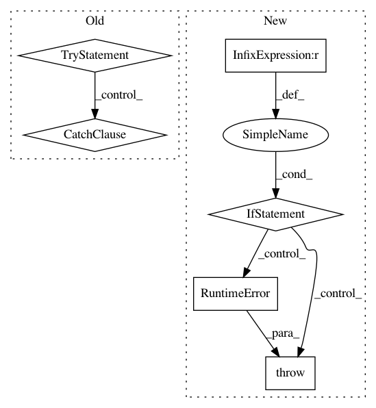

6c83b47904619bcd2bbb0be73bd76e11598a755a,tensorflow_transform/beam/impl.py,,_assert_tensorflow_version,#,333
Before Change
def _assert_tensorflow_version():
try:
// Fail with a clear error in case we are not using a compatible TF version.
with tf.Session(graph=tf.Graph()):
// Even if the file doesn"t exist, this session never gets executed we just
// use it to find out if the string_to_index_table_from_file initializer is
// compatible with tf.Transform.
vocabulary_file = tf.constant("__test_file__")
tf.contrib.lookup.string_to_index_table_from_file(
vocabulary_file=vocabulary_file)
except TypeError:
// Catch the following error from the previous TF version:
// TypeError: Using a `tf.Tensor` as a Python `bool` is not allowed.
// Use `if t is not None:` instead of `if t:` to test if a tensor is defined,
// and use TensorFlow ops such as tf.cond to execute subgraphs conditioned on
// the value of a tensor."
raise RuntimeError(
"Tensorflow version 1.3 is required. Please install the latest version "
"from https://github.com/tensorflow/tensorflow.")
def _asset_files_supported():
try:
_assert_tensorflow_version()
return True
After Change
def _assert_tensorflow_version():
// Fail with a clear error in case we are not using a compatible TF version.
major, minor, _ = tf.__version__.split(".")
if int(major) != 1 or int(minor) < 4:
raise RuntimeError(
"Tensorflow version >= 1.4, < 2 is required. Found (%s). Please "
"install the latest 1.x version from "
"https://github.com/tensorflow/tensorflow. " % tf.__version__)
def _asset_files_supported():
try:
_assert_tensorflow_version()
return True
In pattern: SUPERPATTERN
Frequency: 3
Non-data size: 6
Instances
Project Name: tensorflow/transform
Commit Name: 6c83b47904619bcd2bbb0be73bd76e11598a755a
Time: 2017-11-30
Author: tf-transform-dev@google.com
File Name: tensorflow_transform/beam/impl.py
Class Name:
Method Name: _assert_tensorflow_version
Project Name: stellargraph/stellargraph
Commit Name: 3c4d7d9a576fd29029975e16b34900fcded78c02
Time: 2018-12-19
Author: andrew.docherty@data61.csiro.au
File Name: stellargraph/core/schema.py
Class Name: GraphSchema
Method Name: get_edge_type
Project Name: stellargraph/stellargraph
Commit Name: 3c4d7d9a576fd29029975e16b34900fcded78c02
Time: 2018-12-19
Author: andrew.docherty@data61.csiro.au
File Name: stellargraph/core/schema.py
Class Name: GraphSchema
Method Name: is_of_edge_type